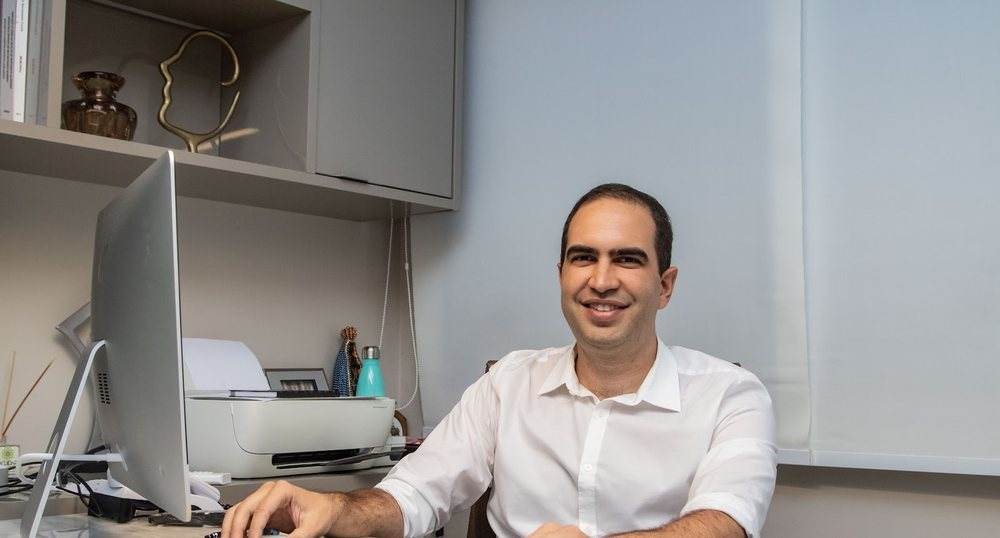

Início · Onde atendo
Onde atendo: Salvador e Feira de Santana.
Em Salvador, no Empresarial Cidade Jardim (Rua Leonor Calmon, 44, Candeal). Em Feira de Santana, no Ed. Mut Boulevard Feira. Um só WhatsApp para as duas cidades: (71) 99920-2603.
Candeal
Salvador
Empresarial Cidade Jardim
Rua Leonor Calmon, 44
Candeal · Salvador – BA · 40296-210
Atendimento com hora marcada
Horário da ficha do Google do consultório. Atendimento com hora marcada — confirme com a equipe.

Av. João Durval
Feira de Santana
Ed. Mut Boulevard Feira
Av. Gov. João Durval Carneiro, 3665
Feira de Santana – BA
Dia, horário e sala do atendimento em Feira de Santana são combinados pelo WhatsApp. No Linktree do Dr. Fillipe, o botão é “Atendimento em Feira de Santana”.
Agendamento
Como agendar
- Mande uma mensagemPelo WhatsApp (71) 99920-2603, o mesmo para as duas cidades.
- Diga a cidadeSalvador ou Feira de Santana: a equipe combina dia e horário na conversa.
- Leve o que tiverExames recentes, a lista de medicamentos e as suas dúvidas anotadas.
Rota
Mapa · Salvador
Preparo
O que levar à consulta
- Documento de identidade.
- Exames recentes, se tiver.
- A lista dos medicamentos que você usa.
- Informações sobre cirurgias anteriores e alergias.
- As suas dúvidas, anotadas.
Dúvidas frequentes
Perguntas comuns
Qual é o horário?
Em Salvador, a ficha do Google indica segunda a sexta, das 8h às 18h. Em Feira de Santana, confirme pelo WhatsApp (71) 99920-2603.
Aceita convênio?
Confirme pelo WhatsApp as condições de atendimento.
Tem estacionamento?
Confirme pelo WhatsApp antes de ir.
Agende
A primeira conversa é a consulta.
Atendimento com hora marcada em Salvador (Empresarial Cidade Jardim, Candeal) e em Feira de Santana. Escolha a cidade e combine dia e horário pelo WhatsApp (71) 99920-2603.